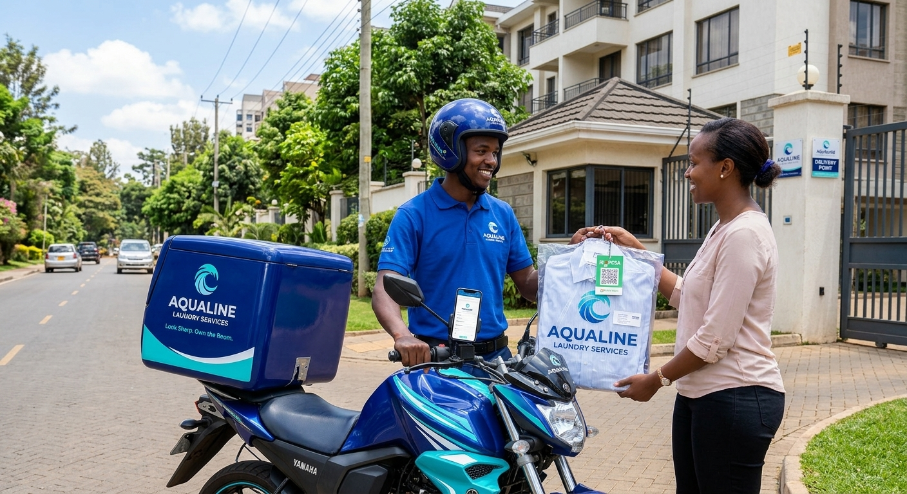

Convenient Laundry Pickup and Delivery

We make your laundry experience simple and stress-free.Drop off your clothes at our laundry centre or contact us to arrange pickup and delivery within our service area.Our team handles your garments with care, keeps you informed about their progress, and prepares them for collection or delivery.
Book a PickupHow Our Service Works
1. Book or Drop Off
Contact our team to request a pickup or bring your garments directly to our laundry counter.
2. Garment Registration
Our staff record your customer details, garment information and order number to help prevent mix-ups.
3. Washing and Processing
Your garments are sorted, washed, dried and finishedaccording to their care requirements.
4. Order Tracking
Our team updates your order as it moves through the processing stages: Received, In Progress and Ready.
5. Payment and Delivery
Confirm your bill, pay usingLipa na M-Pesa,Paybill No 166116 and collect your laundry or arrange delivery.
Payments and Order Information
- Receive an order reference for easier order identification.
- Confirm the laundry charges before making payment.
- Use M-Pesa when the payment service is available.
- Keep your payment confirmation for reference.
- Contact our staff if you have questions about your bill or order status.
M-Pesa STK Push payments can be supported through ourintegrated payment system when configured. Do not share your M-Pesa PIN with anyone.
Need Help With Your Laundry Order?
Our customer care team is available to help you enquire about pickup arrangements, delivery schedules, payments and order status.
Contact Our Team